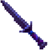

Quest for Glory III: Wages of War is a role-playing/adventure game released in 1992 by Sierra. It takes place in an area called Fricana, based on Africa, where the hero must avert a war between two opposing tribes and ultimately defeat a demon. Depending on the width of your browser window, you may see a feline creature at the top left. This is Rakeesh, a noble warrior who introduces you to your quest and assists you at key points.
This game received high praise from some when it was released, but has also been criticized as the "filler" game of the series, and in many ways it is less impressive than its successor. The game is relatively short and simple; it can be beaten quickly with relatively little thinking. There is no equivalent here to the puzzles surrounding Dr. Cranium in Quest for Glory IV, and there are not many side quests to complete.
Both the music and graphics are not at the level of Shadows of Darkness, but greatly improved over those of earlier titles. The soundtrack includes intricate melodies and fits the heroic mood of the game very well. The graphics, featuring 256 colors as opposed to the mere 16 seen in its predecessors, can be seen in the carousel below.
My main purpose here is to follow up on an idea which came to me in 2015 in the context of a user interface course in graduate school. I am taking much of the interface of the game, including the graphics for the game's text boxes and menus, and applying it to a website. Originally this applied only to Quest for Glory IV, but here I am applying it to Quest for Glory III.
Downloads
All five of the original games in the series can be had cheaply from GOG.com. This set of the games includes a remake of the first title with far better graphics, but unfortunately those of the second game are still rather primitive. You can however download a greatly improved 2008 remake of Quest for Glory II: Trial by Fire.
A new "role-playing adventure game" entitled Hero-U: Rogue to Redemption has been developed by Sierra designers Corey and Lori Cole, who were responsible for the Quest for Glory series. The title has received overwhelmingly positive reviews from both players and critics. The game is intended to be the first of five similar titles, and a more casual game entitled Summer Daze at Hero-U is scheduled for release in October of this year.
A well-received 2013 game based on the series, entitled Heroine's Quest is free to download. The story, based on Norse mythology, takes place in a region cursed by a frost giant to be in endless winter. The heroine must thwart the giant's attempts to bring about the end of the world and restore the normal change of seasons.
Many more QfG-related resources including screenshots can be found at two fan pages, Quest for More Glory and Blake's Sanctum, while help for various problems, including the game's manual, is available at Sierrahelp.com. Sierragamers.com supplies the hint book.
Game Images
Here are some screenshots taken from the game, to give a sense of what this page is attempting to emulate.

Icons
Here are some icons from the game. The icons are used to interact with the environment in different ways; for example, the mouth icon is used to speak with someone, while the walking man you can see here when you mouse over a link is used to walk somewhere. The scarab represents waiting; it appears during any action in the game of which the character is only an observer and cannot intervene. They appear different depending on whether it is day or night in the game, so they are presented in pairs below.
An attempt has already been made by others to implement some of these as extensions to an operating system.
